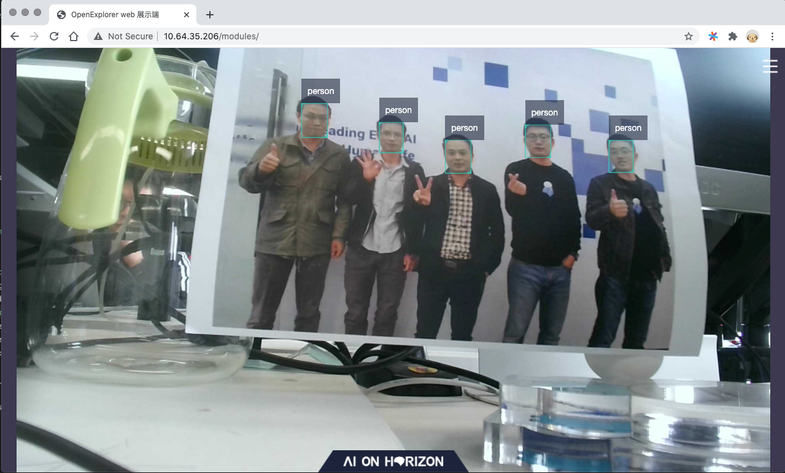

应用开发示例¶
在完成开发板的上电，镜像编译，板卡系统升级以及开发环境的搭建以后，下一步就可以将 ddk/samples 目录下示例跑起来。
本文将围绕多任务感知参考解决方案 ddk/samples/solution_zoo/multitask_perception_solution 来介绍如何快速跑通开发板的全链路流程。
1. 环境确认¶
交叉编译环境已经安装
work@work-server:~$ ll /opt/gcc-linaro-6.5.0-2018.12-x86_64_aarch64-linux-gnu
total 36
drwxr-xr-x 7 root root 4096 10月 15 2019 aarch64-linux-gnu
drwxr-xr-x 2 root root 4096 10月 15 2019 bin
-rw-r--r-- 1 root root 9489 10月 15 2019 gcc-linaro-6.5.0-2018.12-linux-manifest.txt
drwxr-xr-x 3 root root 4096 10月 15 2019 include
drwxr-xr-x 3 root root 4096 10月 15 2019 lib
drwxr-xr-x 3 root root 4096 10月 15 2019 libexec
drwxr-xr-x 8 root root 4096 10月 15 2019 share
ddk/package/hostpackage已经安装
~/.horizon/ddk/
├── xj3_aarch64
│ ├── appsdk
│ │ └── appuser
│ ├── appsdk_1.9.0.tar.gz
│ ├── bpu_predict
│ │ ├── include
│ │ └── lib
│ ├── bpu_predict_1.10.2.tar.gz
│ ├── dnn
│ │ ├── include
│ │ └── lib
│ ├── dnn_1.1.2a.tar.gz
│ ├── hobotsdk
│ │ ├── include
│ │ └── lib
│ ├── hobotsdk_1.9.13.tar.gz
│ ├── image_utils
│ │ ├── include
│ │ └── lib
│ ├── image_utils_1.1.10c.tar.gz
│ ├── model_inference
│ │ ├── include
│ │ └── lib
│ ├── model_inference_1.0.13.tar.gz
│ ├── rtsp_server
│ │ ├── include
│ │ └── lib
│ ├── rtsp_server_1.0.13.tar.gz
│ ├── uvc_server
│ │ ├── include
│ │ └── lib
│ ├── uvc_server_1.0.13.tar.gz
│ ├── video_source
│ │ ├── include
│ │ └── lib
│ ├── video_source_1.0.13.tar.gz
│ ├── xproto
│ │ ├── include
│ │ └── lib
│ ├── xproto_1.1.10c.tar.gz
│ ├── xstream
│ │ ├── include
│ │ └── lib
│ └── xstream_1.1.10c.tar.gz
└── xj3_x86_64_gcc_4.8.5
├── bpu_predict
│ ├── include
│ └── lib
├── bpu_predict_1.10.2.tar.gz
├── dnn_x86
│ ├── include
│ └── lib
├── dnn_x86_1.1.2a.tar.gz
├── hobotsdk
│ ├── include
│ └── lib
├── hobotsdk_1.9.13.tar.gz
├── xproto
│ ├── include
│ └── lib
├── xproto_1.1.10c.tar.gz
├── xstream
│ ├── include
│ └── lib
└── xstream_1.1.10c.tar.gz
开发板和开发机器连通，并完成配套的系统镜像升级，我们这里示例是基于0207进行验证。
root@x3sdbx3-samsung2G-3200:~# cat /etc/version
LNX_PL2.0_WB_20210207 release
ddk/package/board板端附加工具已经安装。
// 将ddk/package/board安装到开发板子
work@work-server:/ddk/package/board$ sh install.sh 10.64.35.206
// 验证安装成功
root@x3sdbx3-samsung2G-3200:/userdata/.horizon/# ll
drwxr-xr-x 6 root root 4096 Jan 1 08:14 ai_express_webservice_display
-rwx------ 1 root root 10424232 Jan 1 08:15 hrt_bin_dump
-rwx------ 1 root root 15380352 Jan 1 08:15 hrt_model_exec
2. 样例编译¶
多任务感知参考解决方案内置了丰富的人脸人体感知相关的算法，并且以源码方式进行提供。
使用之前，首先需要进行编译，进入 ddk/samples/solution_zoo/multitask_perception_solution 目录，执行 build_and_deploy.sh 即可以完成编译。
一旦正确完成编译，会在 multitask_perception_solution 目录下，新增 /deploy 目录。
work@work-server:/multitask_perception_solution/deploy$ ll
total 44
drwxr-xr-x 6 work work 4096 4月 13 11:32 configs
drwxrwxr-x 2 work work 4096 4月 13 11:32 lib
drwxr-xr-x 2 work work 4096 4月 13 11:32 models
drwxrwxr-x 3 work work 4096 4月 13 11:32 multitask_perception
-rwxr-xr-x 1 work work 12366 4月 13 11:32 run_body.sh
-rwxr-xr-x 1 work work 11637 4月 13 11:32 run_face_recog.sh
Note
首次编译，由于会涉及较多的依赖库的编译，整体编译速度会较慢，但是在后续做了源码修改以后，
再次执行 build_and_deploy.sh 相比会有很大的速度提升。
3. 上板部署¶
多任务感知参考解决方案解决方案部署，非常简单，你只需要将 multitask_perception_solution/deploy 部署到开发板的 /userdata 目录下即可以。
你可以采用scp/tftp/nfs等方式来进行开发机与开发板之间的数据传输，本文采用scp方式进行实现。
// 将/deploy安装到开发板
work@work-server:/solution_zoo/multitask_perception_solution$ scp -r deploy root@10.64.35.206:/userdata/
// 在开发板上验证安装成功
root@x3sdbx3-samsung2G-3200:/userdata/deploy# ll
drwxr-xr-x 6 root root 4096 Jan 1 08:29 configs
drwxrwxr-x 2 root root 4096 Jan 1 08:29 lib
drwxr-xr-x 2 root root 4096 Jan 1 08:29 models
drwxrwxr-x 3 root root 4096 Jan 1 08:29 multitask_perception
-rwx------ 1 root root 12366 Jan 1 08:29 run_body.sh
-rwx------ 1 root root 11637 Jan 1 08:29 run_face_recog.sh
4. 执行与可视化¶
/userdata/deploy 目录下提供了 run_body.sh 和 run_face_recog.sh 两个脚本，支持分别运行人体感知示例和人脸感知示例。
运行过程中，需要根据你的开发板外接的摄像头类型来进行实现，我们这里采用的一个奥速的1080p的USB摄像头。
root@x3sdbx3-samsung2G-3200:/userdata/deploy# sh run_face_recog.sh
chmod: start_nginx.sh: No such file or directory
sh: can't open 'start_nginx.sh': No such file or directory
Choose lunch x3 vio type menu...pick a combo:
1. single cam
2. single feedback
Which would you like?
1
You choose 1:single_cam
Choose lunch single cam sensor menu...pick a combo:
1. single camera: os8a10, 2160P
2. single camera: os8a10, 1080P
3. single camera: usb_cam, 1080P
4. single camera: f37_1080p, 1080P
Which would you like?
3
You choose 3:usb_cam
vio_mode: usb_cam
vio_pipe_file: configs/vio/x3dev/iot_vio_x3_usb_cam_1080p.json
usb_cam start, default resolution 1080P...
/usr/bin/adbd is not runnning
vio_cfg_file: ./configs/vio_config.json.x3dev.cam
turn on mallopt
use bpu native engine
[1970-01-01 08:35:32 INFO 548044893280 hr_api.cpp:479] HorizonRT version = 1.5.1
[1970-01-01 08:35:32 INFO 548044893280 hr_api.cpp:484] hbrt version = 3.12.2
一旦运行起来，你就可以在同一个网段的开发机上，访问 http://[开发板] 地址来可视化执行输出的结果，我们这里访问的 http://10.64.35.206。
整体效果如下所示：
{kind=link}